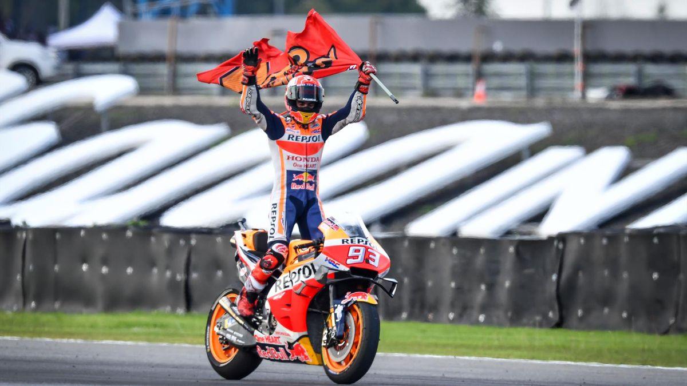

1.
VALENTINO ROSSI
Nato a Urbino (Marche), è un ex pilota motociclistico. Vince nove titoli mondiali, il primo a 18 anni, in quattro classi differenti: uno nella classe 125, uno nella 250, uno nella 500 e sei nella MotoGP. Sceglie sempre il numero 46 per conservare il numero del padre, anch'egli pilota motociclistico. In carriera guida moto delle scuderie Aprilia, Honda, Yamaha e Ducati. Dal 2013 torna in sella ad una Yamaha, conquistando un quarto e un secondo posto nel motomondiale. Anche al termine della stagione 2015 conquista il secondo posto dietro Jorge Lorenzo, ma tra mille polemiche per uno scontro nella penultima gara con lo spagnolo Marc Márquez e la conseguente penalizzazione inflitta all'italiano nell'ultimo Gran Premio, che gli impedisce di fatto di conquistare il titolo. Dopo l'ultimo Gran Premio del 2016 si classifica ancora secondo nel Mondiale di MotoGP, mentre nell'anno successivo è quinto. Al termine della stagione 2018 occupa la terza posizione, ma l'anno dopo è settimo. Nel 2020 disputa il suo peggior motomondiale, classificandosi al quindicesimo posto. Si ritira dalle corse al termine della stagione 2021, conclusa al diciottesimo posto.
IL MIGLIORE
2.
MARC MARQUEZ
Marc Márquez sale per la prima volta su una moto a 5 anni e in poco tempo si ritrova a collezionare successi su successi. Già nel 2005 e nel 2006 centra 2 titoli consecutivi nel Campionato Catalano, cui segue il debutto coronato dal successo nel rinomato CEV, il Campionato spagnolo di velocità. La rapida ascesa continua inarrestabile e nel 2008 arriva l'esordio nel Motomondiale 125 con il team Repsol KTM. Il 2010 vede il passaggio di Márquez alla Derbi e al team Ajo Motorsport, con il sostegno di Red Bull, dove Marc conquista il suo primo titolo mondiale e si prepara per l'immediato passaggio in Moto2 a partire dal 2011. Marc domina per i due anni in Moto2, ottenendo un secondo e un primo posto, per poi arrivare nel 2013 in MotoGP. E' uno dei debutti più attesi nella storia della classe regina: Marc ci mette poco a ingranare e alla seconda gara è già sul gradino più alto del podio.
TALENTUOSO

3.
JORGE LORENZO
Nato a Palma di Maiorca (Spagna), è un pilota motociclistico nella MotoGP. Jorge Lorenzo Guerrero ha una guida spericolata, in particolare in fase di sorpasso. Vince il campionato mondiale della classe 250 nel 2006 e nel 2007, in sella all'Aprilia RSW 250, e quello della MotoGP su Yamaha YZR-M1 nel 2010, nel 2012 e nel 2015, collezionando pure tre secondi posti (2009, 2011 e 2013), due terzi (2014 e 2016), un settimo (2017) e un nono (2018). Il 18 aprile 2016 la Ducati annuncia che nelle stagioni 2017 e 2018 Lorenzo entra a far parte del proprio team, con un compenso totale di 25 milioni di euro. Dal 2019 corre in sella a una Honda ma, penalizzato da una serie di infortuni, chiude la stagione solo al 19° posto. Nel novembre 2019 comunica il ritiro dalle corse e a fine gennaio 2020 diventa tester e collaudatore della Yamaha.
TECNICO

4.
CASEY STONER
Nato a Southport (Australia), è un ex pilota motociclistico, campione del mondo nella MotoGP nel 2007 con la Ducati e nel 2011 con la Honda. Si è ritirato alla fine della stagione 2012. Negli altri cinque campionati in MotoGP si è classificato una volta secondo, una volta terzo, due volte quarto ed una ottavo.
VELOCE

5.
FRANCESCO BAGNAIA
Nasce il 14 gennaio 1997 e fin da piccolo ha cominciato a correre sulle due ruote; passione condivisa in famiglia, infatti sua sorella Carola lo segue sempre nel paddock. A 21 anni è diventato campione del mondo in Moto2. Il 2013 rappresenta l'anno della svolta: Pecco Bagnaia debutta ufficialmente al Mondiale in Moto3. Nel primo anno non ottiene successi e decide di abbracciare subito il progetto del neonato Sky Racing Team VR46, il team che porta la firma di Valentino Rossi. Chiude il 2014 al sedicesimo posto in classifica con 50 punti dopo l'esordio stagionale in Qatar. Passa un altro anno prima di vedere Bagnaia sul podio con il suo nuovo team: Mapfre Team Mahindra insieme a Jorge Martin e Juanfran Guevara. I primi successi arrivano nel 2016 quando il pilota torinese conquista il GP di Assen e quello della Malesia. Nella classifica finale arriva solo quarto, con 145 punti all'attivo. Nel 2019 avviene la promozione in Moto GP e Bagnaia riporta anche qui numerosisuccessi. Il fortunato debutto del pilota in MotoGP è con il team Ducati Pramac. Subito ottiene il 15° posto assoluto con 54 punti mondiali. Il 2021 ha visto Francesco Bagnaia affiancare Jack Miller nella squadra ufficiale Ducati, da cui ebbe tutto il sostegno e la forza che portarono il giovane e talentuoso pilota a conquistare il suo primo titolo di Campione Mondiale MotoGP.
IL PECCO